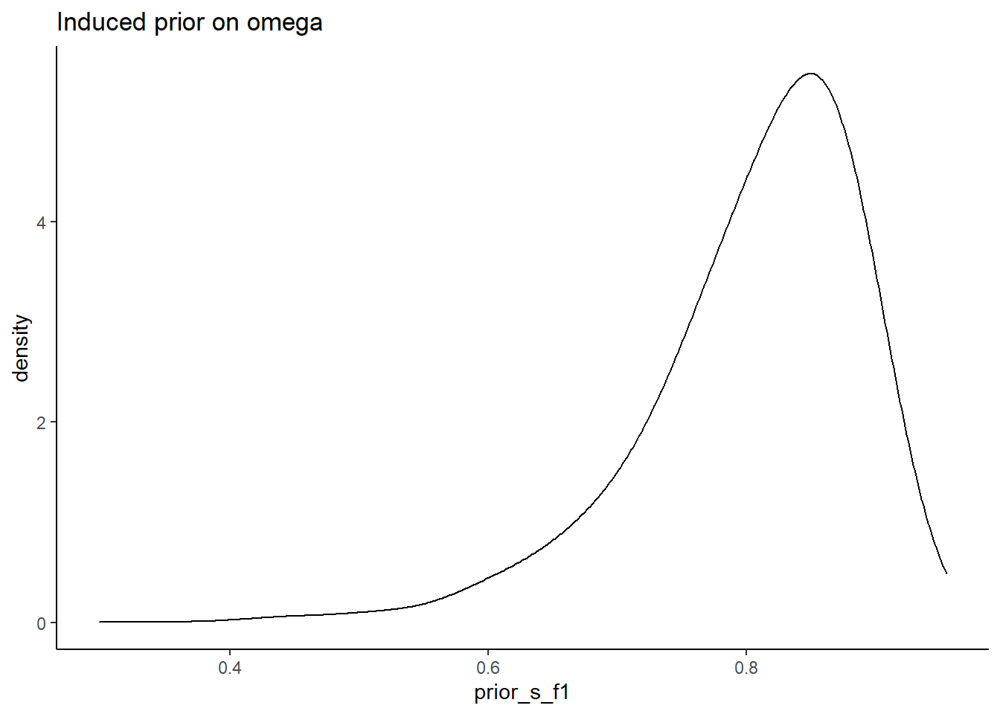
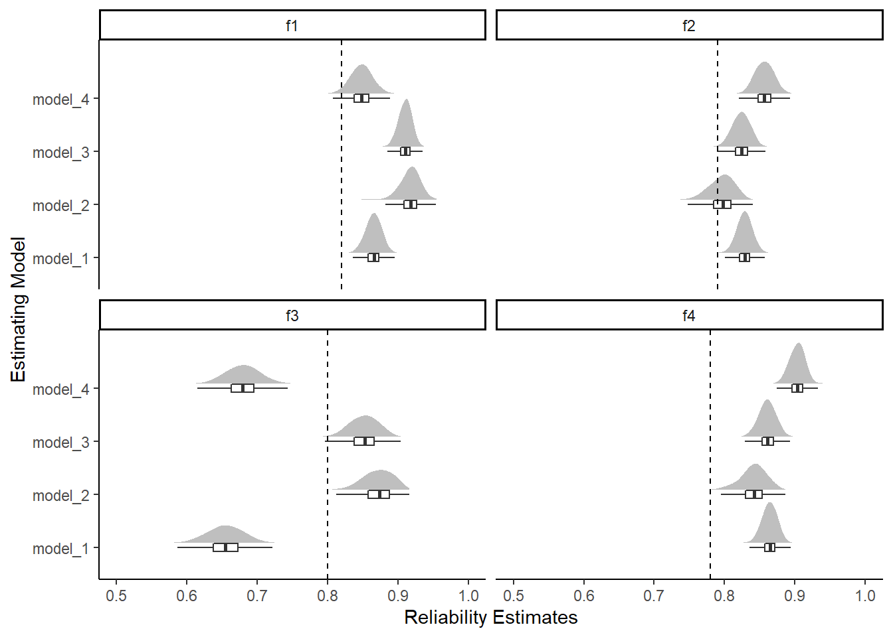
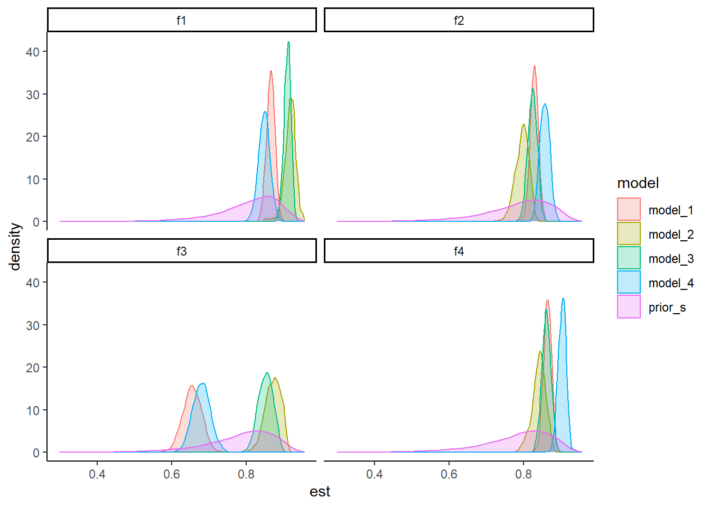
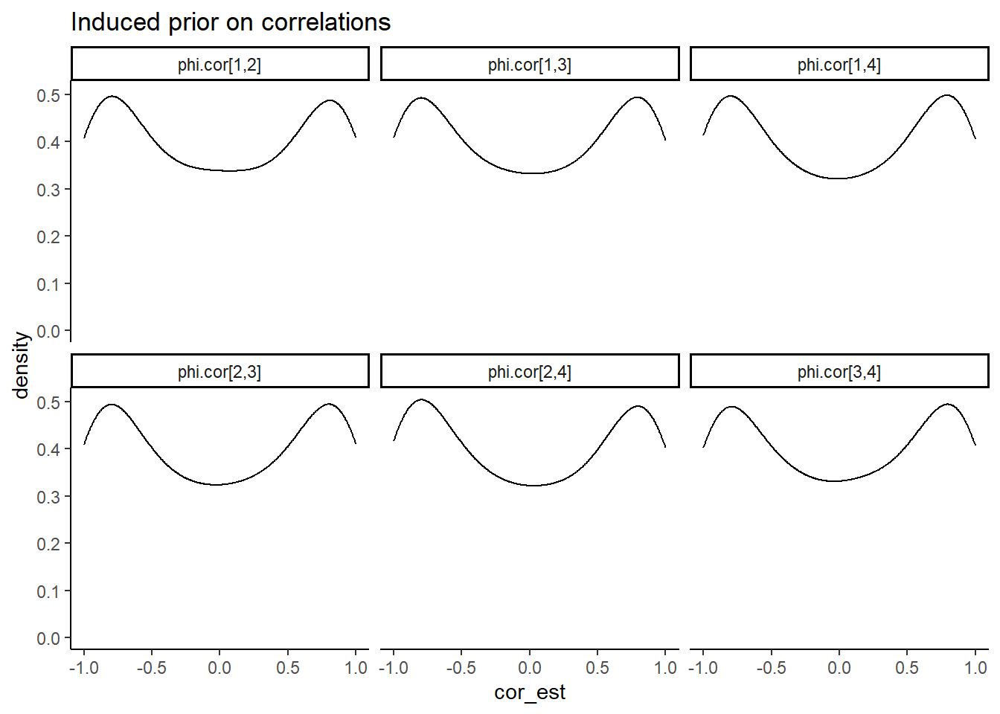
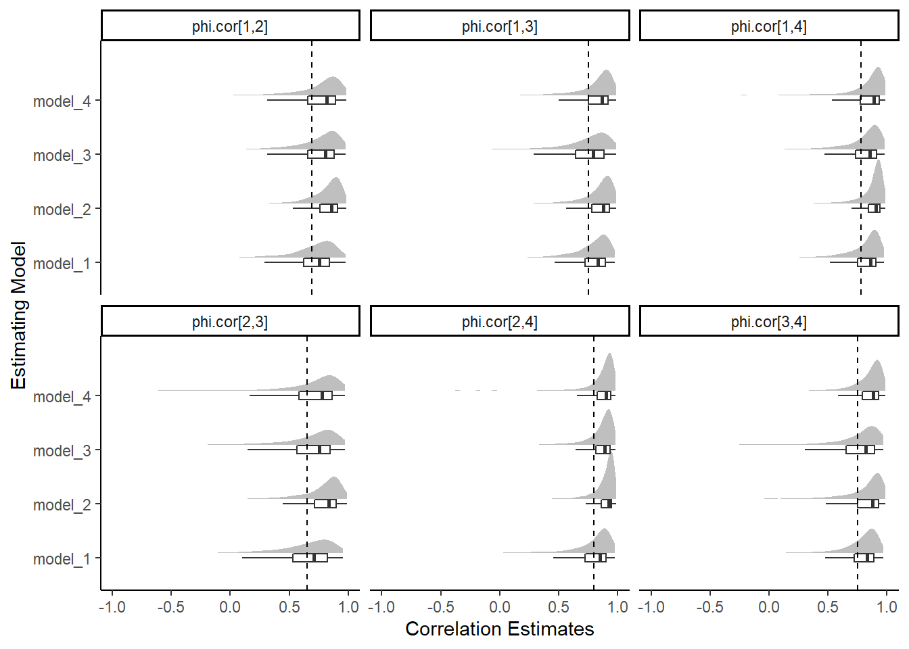
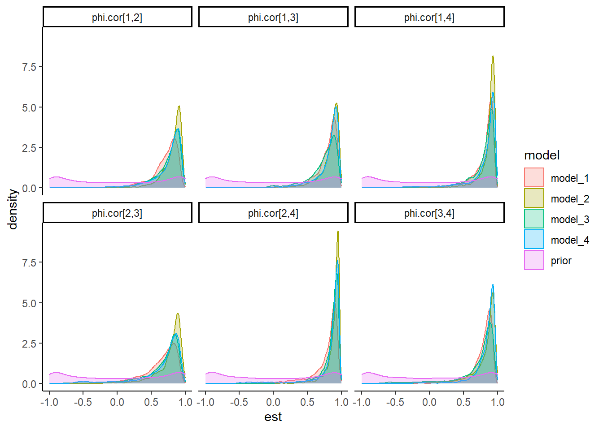
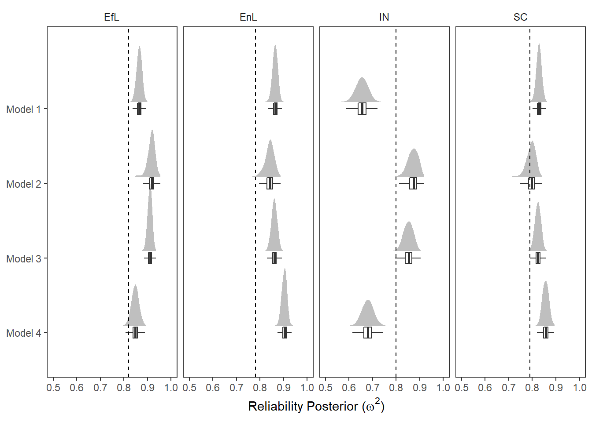
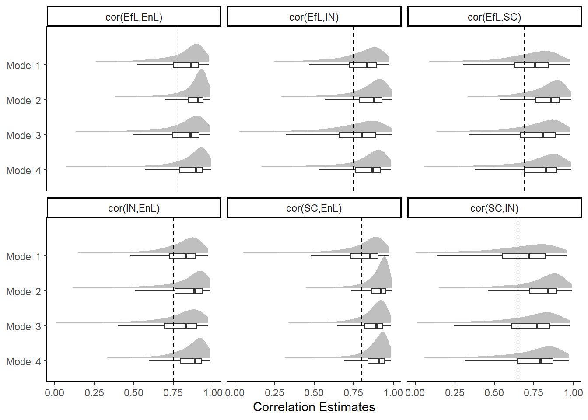

Last updated: 2022-02-02
Checks: 5 1
Knit directory: Padgett-Dissertation/
This reproducible R Markdown analysis was created with workflowr (version 1.6.2). The Checks tab describes the reproducibility checks that were applied when the results were created. The Past versions tab lists the development history.
Great job! The global environment was empty. Objects defined in the global environment can affect the analysis in your R Markdown file in unknown ways. For reproduciblity it’s best to always run the code in an empty environment.
The command set.seed(20210401) was run prior to running the code in the R Markdown file. Setting a seed ensures that any results that rely on randomness, e.g. subsampling or permutations, are reproducible.
Great job! Recording the operating system, R version, and package versions is critical for reproducibility.
Nice! There were no cached chunks for this analysis, so you can be confident that you successfully produced the results during this run.
Great job! Using relative paths to the files within your workflowr project makes it easier to run your code on other machines.
Tracking code development and connecting the code version to the results is critical for reproducibility. To start using Git, open the Terminal and type git init in your project directory.
This project is not being versioned with Git. To obtain the full reproducibility benefits of using workflowr, please see ?wflow_start.
# Load packages & utility functions
source("code/load_packages.R")
source("code/load_utility_functions.R")
# environment options
options(scipen = 999, digits=3)library(readxl)
mydata <- read_excel("data/pools/POOLS_data_2020-11-16.xlsx")
use.var <- c(paste0("Q4_",c(3:5,9,11,15,18)),
paste0("Q5_",c(1:3,5:6,12)),
paste0("Q6_",c(2,5:8, 11)),
paste0("Q7_",c(2, 4:5, 7:8, 14)))
# trichotomize
f <- function(x){
y=numeric(length(x))
for(i in 1:length(x)){
if(x[i] < 3){
y[i] = 1
}
if(x[i] == 3){
y[i] = 2
}
if(x[i] > 3){
y[i] = 3
}
}
return(y)
}
mydata <- na.omit(mydata[, use.var])
mydata <- apply(mydata, 2, f) %>%
as.data.frame()
psych::describe(
mydata
) vars n mean sd median trimmed mad min max range skew kurtosis se
Q4_3 1 490 1.62 0.65 2 1.53 1.48 1 3 2 0.57 -0.68 0.03
Q4_4 2 490 1.64 0.65 2 1.56 1.48 1 3 2 0.51 -0.71 0.03
Q4_5 3 490 1.52 0.68 1 1.40 0.00 1 3 2 0.92 -0.36 0.03
Q4_9 4 490 1.65 0.76 1 1.56 0.00 1 3 2 0.69 -0.96 0.03
Q4_11 5 490 1.64 0.72 1 1.55 0.00 1 3 2 0.66 -0.85 0.03
Q4_15 6 490 1.58 0.68 1 1.47 0.00 1 3 2 0.74 -0.59 0.03
Q4_18 7 490 1.52 0.63 1 1.43 0.00 1 3 2 0.81 -0.38 0.03
Q5_1 8 490 1.73 0.77 2 1.66 1.48 1 3 2 0.50 -1.16 0.03
Q5_2 9 490 2.00 0.86 2 2.00 1.48 1 3 2 0.00 -1.64 0.04
Q5_3 10 490 1.79 0.81 2 1.73 1.48 1 3 2 0.41 -1.37 0.04
Q5_5 11 490 2.33 0.81 3 2.41 0.00 1 3 2 -0.67 -1.18 0.04
Q5_6 12 490 1.94 0.77 2 1.93 1.48 1 3 2 0.09 -1.33 0.03
Q5_12 13 490 1.92 0.78 2 1.90 1.48 1 3 2 0.14 -1.36 0.04
Q6_2 14 490 1.40 0.67 1 1.24 0.00 1 3 2 1.42 0.64 0.03
Q6_5 15 490 1.66 0.80 1 1.58 0.00 1 3 2 0.68 -1.11 0.04
Q6_6 16 490 1.22 0.52 1 1.09 0.00 1 3 2 2.29 4.28 0.02
Q6_7 17 490 1.45 0.66 1 1.32 0.00 1 3 2 1.17 0.14 0.03
Q6_8 18 490 1.43 0.65 1 1.31 0.00 1 3 2 1.21 0.27 0.03
Q6_11 19 490 1.85 0.76 2 1.81 1.48 1 3 2 0.26 -1.22 0.03
Q7_2 20 490 1.74 0.69 2 1.67 1.48 1 3 2 0.39 -0.89 0.03
Q7_4 21 490 1.89 0.79 2 1.86 1.48 1 3 2 0.20 -1.37 0.04
Q7_5 22 490 1.89 0.76 2 1.86 1.48 1 3 2 0.19 -1.24 0.03
Q7_7 23 490 2.43 0.78 3 2.54 0.00 1 3 2 -0.91 -0.76 0.04
Q7_8 24 490 1.87 0.75 2 1.84 1.48 1 3 2 0.21 -1.21 0.03
Q7_14 25 490 2.39 0.76 3 2.49 0.00 1 3 2 -0.78 -0.85 0.03t(apply(mydata,2, table)) 1 2 3
Q4_3 232 211 47
Q4_4 222 220 48
Q4_5 285 154 51
Q4_9 258 147 85
Q4_11 247 171 72
Q4_15 258 180 52
Q4_18 272 181 37
Q5_1 229 164 97
Q5_2 180 131 179
Q5_3 225 145 120
Q5_5 108 113 269
Q5_6 161 195 134
Q5_12 170 188 132
Q6_2 346 94 50
Q6_5 266 123 101
Q6_6 405 61 24
Q6_7 316 129 45
Q6_8 321 127 42
Q6_11 183 199 108
Q7_2 197 224 69
Q7_4 183 180 127
Q7_5 171 203 116
Q7_7 89 101 300
Q7_8 174 205 111
Q7_14 82 135 273mod <- '
EL =~ 1*Q4_3 + lam44*Q4_4 + lam45*Q4_5 + lam49*Q4_9 + lam411*Q4_11 + lam415*Q4_15 + lam418*Q4_18
SC =~ 1*Q5_1 + lam52*Q5_2 + lam53*Q5_3 + lam55*Q5_5 + lam56*Q5_6 + lam512*Q5_12
IN =~ 1*Q6_2 + lam65*Q6_5 + lam66*Q6_6 + lam67*Q6_7 + lam68*Q6_8 + lam611*Q6_11
EN =~ 1*Q7_2 + lam74*Q7_4 + lam75*Q7_5 + lam77*Q7_7 + lam78*Q7_8 + lam714*Q7_14
# Factor covarainces
EL ~~ EL + SC + IN + EN
SC ~~ SC + IN + EN
IN ~~ IN + EN
EN ~~ EN
# Factor Reliabilities
rEL := ((1 + lam44 + lam45 + lam49 + lam411 + lam415 + lam418)**2)/((1 + lam44 + lam45 + lam49 + lam411 + lam415 + lam418)**2 + 7)
rSC := ((1 + lam52 + lam53 + lam55 + lam56 + lam512)**2)/((1 + lam52 + lam53 + lam55 + lam56 + lam512)**2 + 6)
rIN := ((1 + lam65 + lam66 + lam67 + lam68 + lam611)**2)/((1 + lam65 + lam66 + lam67 + lam68 + lam611)**2 + 6)
rEN := ((1 + lam74 + lam75 + lam77 + lam78 + lam714)**2)/((1 + lam74 + lam75 + lam77 + lam78 + lam714)**2 + 6)
'
fit.dwls <- lavaan::cfa(mod, data=mydata, ordered=T)
summary(fit.dwls, standardized=T, fit.measures=T)lavaan 0.6-7 ended normally after 49 iterations
Estimator DWLS
Optimization method NLMINB
Number of free parameters 81
Number of observations 490
Model Test User Model:
Standard Robust
Test Statistic 593.869 765.951
Degrees of freedom 269 269
P-value (Chi-square) 0.000 0.000
Scaling correction factor 0.883
Shift parameter 93.760
simple second-order correction
Model Test Baseline Model:
Test statistic 32729.962 10489.239
Degrees of freedom 300 300
P-value 0.000 0.000
Scaling correction factor 3.183
User Model versus Baseline Model:
Comparative Fit Index (CFI) 0.990 0.951
Tucker-Lewis Index (TLI) 0.989 0.946
Robust Comparative Fit Index (CFI) NA
Robust Tucker-Lewis Index (TLI) NA
Root Mean Square Error of Approximation:
RMSEA 0.050 0.061
90 Percent confidence interval - lower 0.044 0.056
90 Percent confidence interval - upper 0.055 0.067
P-value RMSEA <= 0.05 0.529 0.000
Robust RMSEA NA
90 Percent confidence interval - lower NA
90 Percent confidence interval - upper NA
Standardized Root Mean Square Residual:
SRMR 0.065 0.065
Parameter Estimates:
Standard errors Robust.sem
Information Expected
Information saturated (h1) model Unstructured
Latent Variables:
Estimate Std.Err z-value P(>|z|) Std.lv Std.all
EL =~
Q4_3 1.000 0.777 0.777
Q4_4 (lm44) 1.123 0.037 30.348 0.000 0.872 0.872
Q4_5 (lm45) 0.979 0.043 22.805 0.000 0.760 0.760
Q4_9 (lm49) 0.883 0.047 18.643 0.000 0.686 0.686
Q4_11 (l411) 1.018 0.041 24.844 0.000 0.791 0.791
Q4_15 (l415) 0.998 0.043 23.381 0.000 0.775 0.775
Q4_18 (l418) 1.086 0.040 27.368 0.000 0.843 0.843
SC =~
Q5_1 1.000 0.734 0.734
Q5_2 (lm52) 0.989 0.056 17.522 0.000 0.726 0.726
Q5_3 (lm53) 0.973 0.061 15.972 0.000 0.714 0.714
Q5_5 (lm55) 0.893 0.066 13.477 0.000 0.656 0.656
Q5_6 (lm56) 1.087 0.060 18.085 0.000 0.798 0.798
Q5_12 (l512) 1.075 0.061 17.704 0.000 0.789 0.789
IN =~
Q6_2 1.000 0.725 0.725
Q6_5 (lm65) 0.752 0.071 10.620 0.000 0.546 0.546
Q6_6 (lm66) 1.204 0.068 17.697 0.000 0.874 0.874
Q6_7 (lm67) 1.169 0.066 17.758 0.000 0.848 0.848
Q6_8 (lm68) 1.093 0.060 18.255 0.000 0.793 0.793
Q6_11 (l611) 1.186 0.070 16.932 0.000 0.860 0.860
EN =~
Q7_2 1.000 0.779 0.779
Q7_4 (lm74) 0.905 0.045 20.233 0.000 0.705 0.705
Q7_5 (lm75) 1.039 0.046 22.632 0.000 0.809 0.809
Q7_7 (lm77) 0.945 0.059 16.113 0.000 0.736 0.736
Q7_8 (lm78) 0.941 0.044 21.465 0.000 0.733 0.733
Q7_14 (l714) 0.823 0.056 14.725 0.000 0.641 0.641
Covariances:
Estimate Std.Err z-value P(>|z|) Std.lv Std.all
EL ~~
SC 0.391 0.032 12.101 0.000 0.685 0.685
IN 0.422 0.035 12.131 0.000 0.748 0.748
EN 0.471 0.030 15.840 0.000 0.778 0.778
SC ~~
IN 0.346 0.035 9.904 0.000 0.649 0.649
EN 0.460 0.033 13.989 0.000 0.803 0.803
IN ~~
EN 0.422 0.036 11.883 0.000 0.747 0.747
Intercepts:
Estimate Std.Err z-value P(>|z|) Std.lv Std.all
.Q4_3 0.000 0.000 0.000
.Q4_4 0.000 0.000 0.000
.Q4_5 0.000 0.000 0.000
.Q4_9 0.000 0.000 0.000
.Q4_11 0.000 0.000 0.000
.Q4_15 0.000 0.000 0.000
.Q4_18 0.000 0.000 0.000
.Q5_1 0.000 0.000 0.000
.Q5_2 0.000 0.000 0.000
.Q5_3 0.000 0.000 0.000
.Q5_5 0.000 0.000 0.000
.Q5_6 0.000 0.000 0.000
.Q5_12 0.000 0.000 0.000
.Q6_2 0.000 0.000 0.000
.Q6_5 0.000 0.000 0.000
.Q6_6 0.000 0.000 0.000
.Q6_7 0.000 0.000 0.000
.Q6_8 0.000 0.000 0.000
.Q6_11 0.000 0.000 0.000
.Q7_2 0.000 0.000 0.000
.Q7_4 0.000 0.000 0.000
.Q7_5 0.000 0.000 0.000
.Q7_7 0.000 0.000 0.000
.Q7_8 0.000 0.000 0.000
.Q7_14 0.000 0.000 0.000
EL 0.000 0.000 0.000
SC 0.000 0.000 0.000
IN 0.000 0.000 0.000
EN 0.000 0.000 0.000
Thresholds:
Estimate Std.Err z-value P(>|z|) Std.lv Std.all
Q4_3|t1 -0.067 0.057 -1.173 0.241 -0.067 -0.067
Q4_3|t2 1.305 0.078 16.683 0.000 1.305 1.305
Q4_4|t1 -0.118 0.057 -2.076 0.038 -0.118 -0.118
Q4_4|t2 1.293 0.078 16.631 0.000 1.293 1.293
Q4_5|t1 0.206 0.057 3.608 0.000 0.206 0.206
Q4_5|t2 1.259 0.076 16.468 0.000 1.259 1.259
Q4_9|t1 0.067 0.057 1.173 0.241 0.067 0.067
Q4_9|t2 0.941 0.067 14.080 0.000 0.941 0.941
Q4_11|t1 0.010 0.057 0.181 0.857 0.010 0.010
Q4_11|t2 1.050 0.070 15.077 0.000 1.050 1.050
Q4_15|t1 0.067 0.057 1.173 0.241 0.067 0.067
Q4_15|t2 1.247 0.076 16.411 0.000 1.247 1.247
Q4_18|t1 0.139 0.057 2.436 0.015 0.139 0.139
Q4_18|t2 1.436 0.084 17.100 0.000 1.436 1.436
Q5_1|t1 -0.082 0.057 -1.444 0.149 -0.082 -0.082
Q5_1|t2 0.849 0.065 13.109 0.000 0.849 0.849
Q5_2|t1 -0.339 0.058 -5.855 0.000 -0.339 -0.339
Q5_2|t2 0.344 0.058 5.945 0.000 0.344 0.344
Q5_3|t1 -0.102 0.057 -1.805 0.071 -0.102 -0.102
Q5_3|t2 0.691 0.062 11.162 0.000 0.691 0.691
Q5_5|t1 -0.771 0.063 -12.188 0.000 -0.771 -0.771
Q5_5|t2 -0.123 0.057 -2.166 0.030 -0.123 -0.123
Q5_6|t1 -0.444 0.059 -7.555 0.000 -0.444 -0.444
Q5_6|t2 0.602 0.061 9.944 0.000 0.602 0.602
Q5_12|t1 -0.394 0.058 -6.751 0.000 -0.394 -0.394
Q5_12|t2 0.615 0.061 10.119 0.000 0.615 0.615
Q6_2|t1 0.542 0.060 9.064 0.000 0.542 0.542
Q6_2|t2 1.270 0.077 16.524 0.000 1.270 1.270
Q6_5|t1 0.108 0.057 1.895 0.058 0.108 0.108
Q6_5|t2 0.820 0.064 12.777 0.000 0.820 0.820
Q6_6|t1 0.941 0.067 14.080 0.000 0.941 0.941
Q6_6|t2 1.655 0.096 17.201 0.000 1.655 1.655
Q6_7|t1 0.372 0.058 6.393 0.000 0.372 0.372
Q6_7|t2 1.330 0.079 16.782 0.000 1.330 1.330
Q6_8|t1 0.399 0.058 6.841 0.000 0.399 0.399
Q6_8|t2 1.368 0.081 16.917 0.000 1.368 1.368
Q6_11|t1 -0.323 0.058 -5.586 0.000 -0.323 -0.323
Q6_11|t2 0.771 0.063 12.188 0.000 0.771 0.771
Q7_2|t1 -0.248 0.057 -4.328 0.000 -0.248 -0.248
Q7_2|t2 1.077 0.070 15.295 0.000 1.077 1.077
Q7_4|t1 -0.323 0.058 -5.586 0.000 -0.323 -0.323
Q7_4|t2 0.646 0.061 10.555 0.000 0.646 0.646
Q7_5|t1 -0.388 0.058 -6.662 0.000 -0.388 -0.388
Q7_5|t2 0.717 0.062 11.506 0.000 0.717 0.717
Q7_7|t1 -0.909 0.066 -13.761 0.000 -0.909 -0.909
Q7_7|t2 -0.285 0.058 -4.958 0.000 -0.285 -0.285
Q7_8|t1 -0.372 0.058 -6.393 0.000 -0.372 -0.372
Q7_8|t2 0.750 0.063 11.934 0.000 0.750 0.750
Q7_14|t1 -0.965 0.067 -14.316 0.000 -0.965 -0.965
Q7_14|t2 -0.144 0.057 -2.526 0.012 -0.144 -0.144
Variances:
Estimate Std.Err z-value P(>|z|) Std.lv Std.all
EL 0.604 0.037 16.186 0.000 1.000 1.000
SC 0.539 0.049 11.113 0.000 1.000 1.000
IN 0.526 0.052 10.033 0.000 1.000 1.000
EN 0.607 0.042 14.304 0.000 1.000 1.000
.Q4_3 0.396 0.396 0.396
.Q4_4 0.239 0.239 0.239
.Q4_5 0.422 0.422 0.422
.Q4_9 0.530 0.530 0.530
.Q4_11 0.374 0.374 0.374
.Q4_15 0.399 0.399 0.399
.Q4_18 0.289 0.289 0.289
.Q5_1 0.461 0.461 0.461
.Q5_2 0.473 0.473 0.473
.Q5_3 0.490 0.490 0.490
.Q5_5 0.570 0.570 0.570
.Q5_6 0.363 0.363 0.363
.Q5_12 0.377 0.377 0.377
.Q6_2 0.474 0.474 0.474
.Q6_5 0.702 0.702 0.702
.Q6_6 0.237 0.237 0.237
.Q6_7 0.281 0.281 0.281
.Q6_8 0.371 0.371 0.371
.Q6_11 0.260 0.260 0.260
.Q7_2 0.393 0.393 0.393
.Q7_4 0.503 0.503 0.503
.Q7_5 0.345 0.345 0.345
.Q7_7 0.458 0.458 0.458
.Q7_8 0.463 0.463 0.463
.Q7_14 0.589 0.589 0.589
Scales y*:
Estimate Std.Err z-value P(>|z|) Std.lv Std.all
Q4_3 1.000 1.000 1.000
Q4_4 1.000 1.000 1.000
Q4_5 1.000 1.000 1.000
Q4_9 1.000 1.000 1.000
Q4_11 1.000 1.000 1.000
Q4_15 1.000 1.000 1.000
Q4_18 1.000 1.000 1.000
Q5_1 1.000 1.000 1.000
Q5_2 1.000 1.000 1.000
Q5_3 1.000 1.000 1.000
Q5_5 1.000 1.000 1.000
Q5_6 1.000 1.000 1.000
Q5_12 1.000 1.000 1.000
Q6_2 1.000 1.000 1.000
Q6_5 1.000 1.000 1.000
Q6_6 1.000 1.000 1.000
Q6_7 1.000 1.000 1.000
Q6_8 1.000 1.000 1.000
Q6_11 1.000 1.000 1.000
Q7_2 1.000 1.000 1.000
Q7_4 1.000 1.000 1.000
Q7_5 1.000 1.000 1.000
Q7_7 1.000 1.000 1.000
Q7_8 1.000 1.000 1.000
Q7_14 1.000 1.000 1.000
Defined Parameters:
Estimate Std.Err z-value P(>|z|) Std.lv Std.all
rEL 0.878 0.005 160.558 0.000 0.824 0.824
rSC 0.858 0.010 89.363 0.000 0.785 0.785
rIN 0.872 0.009 93.290 0.000 0.801 0.801
rEN 0.842 0.008 101.139 0.000 0.781 0.781# simulated induced prior on omega
prior_lambda <- function(){
y <- -1
while(y < 0){
y <- rnorm(1, 0, 1)
}
return(y)
}
prior_omega <- function(lambda, theta){
(sum(lambda)**2)/(sum(lambda)**2 + sum(theta))
}
nsim=4000
sim_omega1 <- sim_omega2 <- numeric(nsim)
for(i in 1:nsim){
lam_vec <- c(
1, prior_lambda(), prior_lambda(), prior_lambda(),prior_lambda(), prior_lambda(), prior_lambda()
)
tht_vec <- rep(1, 7)
sim_omega1[i] <- prior_omega(lam_vec, tht_vec)
sim_omega2[i] <- prior_omega(lam_vec[1:6], tht_vec[1:6])
}
prior_data <- data.frame(prior_s_f1=sim_omega1,prior_s_f2=sim_omega2,prior_s_f3=sim_omega2,prior_s_f4=sim_omega2)
ggplot(prior_data, aes(x=prior_s_f1))+
geom_density(adjust=2)+
labs(title="Induced prior on omega")+
theme_classic()
# read in data
o1 <- readr::read_csv(paste0(getwd(),"/data/pools/extracted_omega_m1.csv"))Warning: Missing column names filled in: 'X1' [1]
-- Column specification --------------------------------------------------------
cols(
X1 = col_double(),
model_1_f1 = col_double(),
model_1_f2 = col_double(),
model_1_f3 = col_double(),
model_1_f4 = col_double()
)o2 <- readr::read_csv(paste0(getwd(),"/data/pools/extracted_omega_m2.csv"))Warning: Missing column names filled in: 'X1' [1]
-- Column specification --------------------------------------------------------
cols(
X1 = col_double(),
model_2_f1 = col_double(),
model_2_f2 = col_double(),
model_2_f3 = col_double(),
model_2_f4 = col_double()
)o3 <- readr::read_csv(paste0(getwd(),"/data/pools/extracted_omega_m3.csv"))Warning: Missing column names filled in: 'X1' [1]
-- Column specification --------------------------------------------------------
cols(
X1 = col_double(),
model_3_f1 = col_double(),
model_3_f2 = col_double(),
model_3_f3 = col_double(),
model_3_f4 = col_double()
)o4 <- readr::read_csv(paste0(getwd(),"/data/pools/extracted_omega_m4.csv"))Warning: Missing column names filled in: 'X1' [1]
-- Column specification --------------------------------------------------------
cols(
X1 = col_double(),
model_4_f1 = col_double(),
model_4_f2 = col_double(),
model_4_f3 = col_double(),
model_4_f4 = col_double()
)dat_omega <- cbind(o1[,2:5], o2[,2:5], o3[,2:5], o4[,2:5], prior_data[,1:4])
plot.dat <- dat_omega %>%
pivot_longer(
cols=everything(),
names_to = "model",
values_to = "est"
)%>%
mutate(
factor = substr(model, 9,10),
model = substr(model, 1, 7)
)
sum.dat <- plot.dat %>%
group_by(model, factor) %>%
summarise(
Mean = mean(est),
SD = sd(est),
Q025 = quantile(est, 0.025),
Q1 = quantile(est, 0.25),
Median = median(est),
Q3 = quantile(est, 0.75),
Q975 = quantile(est, 0.975),
)`summarise()` has grouped output by 'model'. You can override using the `.groups` argument.kable(sum.dat,format = "html", digits=3) %>%
kable_styling(full_width = T)| model | factor | Mean | SD | Q025 | Q1 | Median | Q3 | Q975 |
|---|---|---|---|---|---|---|---|---|
| model_1 | f1 | 0.865 | 0.011 | 0.843 | 0.858 | 0.866 | 0.873 | 0.886 |
| model_1 | f2 | 0.828 | 0.011 | 0.807 | 0.821 | 0.829 | 0.836 | 0.849 |
| model_1 | f3 | 0.655 | 0.025 | 0.604 | 0.638 | 0.655 | 0.672 | 0.703 |
| model_1 | f4 | 0.864 | 0.011 | 0.842 | 0.857 | 0.864 | 0.872 | 0.884 |
| model_2 | f1 | 0.917 | 0.016 | 0.882 | 0.909 | 0.918 | 0.927 | 0.943 |
| model_2 | f2 | 0.796 | 0.018 | 0.756 | 0.784 | 0.797 | 0.809 | 0.826 |
| model_2 | f3 | 0.872 | 0.021 | 0.827 | 0.857 | 0.873 | 0.888 | 0.906 |
| model_2 | f4 | 0.841 | 0.018 | 0.799 | 0.830 | 0.842 | 0.853 | 0.873 |
| model_3 | f1 | 0.910 | 0.009 | 0.891 | 0.904 | 0.911 | 0.917 | 0.927 |
| model_3 | f2 | 0.824 | 0.012 | 0.799 | 0.815 | 0.824 | 0.833 | 0.846 |
| model_3 | f3 | 0.852 | 0.020 | 0.812 | 0.838 | 0.853 | 0.866 | 0.888 |
| model_3 | f4 | 0.861 | 0.012 | 0.837 | 0.853 | 0.861 | 0.869 | 0.884 |
| model_4 | f1 | 0.848 | 0.015 | 0.817 | 0.838 | 0.848 | 0.858 | 0.878 |
| model_4 | f2 | 0.857 | 0.013 | 0.832 | 0.847 | 0.857 | 0.866 | 0.883 |
| model_4 | f3 | 0.680 | 0.024 | 0.634 | 0.663 | 0.680 | 0.696 | 0.727 |
| model_4 | f4 | 0.903 | 0.011 | 0.881 | 0.896 | 0.904 | 0.911 | 0.923 |
| prior_s | f1 | 0.806 | 0.084 | 0.596 | 0.763 | 0.823 | 0.866 | 0.921 |
| prior_s | f2 | 0.781 | 0.095 | 0.537 | 0.732 | 0.800 | 0.850 | 0.910 |
| prior_s | f3 | 0.781 | 0.095 | 0.537 | 0.732 | 0.800 | 0.850 | 0.910 |
| prior_s | f4 | 0.781 | 0.095 | 0.537 | 0.732 | 0.800 | 0.850 | 0.910 |
# reli from DWLS
reli_est <- data.frame(
factor = c('f1', 'f2', 'f3', 'f4'),
est = c(.82, .79, .80, .78)
)
plot.dat %>%
filter(model != 'prior_s')%>%
ggplot(aes(x=est, y=model, group=interaction(model, factor)))+
ggdist::stat_halfeye(
adjust=2, justification=-0.1,.width=0, point_colour=NA,
normalize="all", fill="grey75"
) +
geom_boxplot(
width=.15, outlier.color = NA, alpha=0.5
) +
geom_vline(data=reli_est, aes(xintercept=est), linetype='dashed')+
labs(x="Reliability Estimates",
y="Estimating Model")+
lims(x=c(0.5, 1))+
facet_wrap(.~factor)+
theme_classic()
ggplot(plot.dat,aes(x=est, group=interaction(model, factor), color=model, fill=model))+
geom_density(alpha=0.25)+
facet_wrap(.~factor)+
theme_classic()
prior_cor <- function(sigma){
S <- LaplacesDemon::rinvwishart(4, matrix(
sigma, ncol=4, nrow=4, byrow=T
))
cor <- matrix(nrow=4,ncol=4)
for(i in 1:4){
for(j in 1:4){
cor[i,j] <- S[i,j]/(sqrt(S[i,i])*sqrt(S[j,j]))
}
}
return(c(cor[1,2],cor[1,3],cor[1,4],cor[2,3],cor[2,4],cor[3,4]))
}
# simulated induced prior on omega
nsim=4000
sim_cor1 <- sim_cor2 <- sim_cor3 <- matrix(nrow=nsim, ncol=6)
for(i in 1:nsim){
sim_cor1[i,] <- prior_cor(c(diag(ncol=4,nrow=4)))
sim_cor2[i,] <- prior_cor(
c(
1, 0.3, 0.3, 0.3,
0.3, 1, 0.3, 0.3,
0.3, 0.3, 1, 0.3,
0.3, 0.3, 0.3, 1)
)
sim_cor3[i,] <- prior_cor(
c(1.52, 0.92, 0.97, 1.19,
0.92, 1.17, 0.74, 1.08,
0.97, 0.74, 1.11, 0.98,
1.19, 1.08, 0.98, 1.55)
)
}
prior_data1 <- as.data.frame(sim_cor1)
prior_data2 <- as.data.frame(sim_cor2)
prior_data3 <- as.data.frame(sim_cor3)
colnames(prior_data1) <- c(
'phi.cor[1,2]','phi.cor[1,3]','phi.cor[1,4]',
'phi.cor[2,3]','phi.cor[2,4]','phi.cor[3,4]')
colnames(prior_data2) <- c(
'phi.cor[1,2]','phi.cor[1,3]','phi.cor[1,4]',
'phi.cor[2,3]','phi.cor[2,4]','phi.cor[3,4]')
colnames(prior_data3) <- c(
'phi.cor[1,2]','phi.cor[1,3]','phi.cor[1,4]',
'phi.cor[2,3]','phi.cor[2,4]','phi.cor[3,4]')
prior_data1$model <- 'prior'
prior_data2$model <- 'prior'
prior_data3$model <- 'prior'
prior_data1 %>%
pivot_longer(
cols=contains('phi.cor'),
names_to = 'cor',
values_to="cor_est"
) %>%
ggplot(aes(x=cor_est))+
geom_density(adjust=2)+
facet_wrap(.~cor)+
labs(title="Induced prior on correlations")+
theme_classic()
# read in data
o1 <- readr::read_csv(paste0(getwd(),"/data/pools/extracted_cor_m1.csv")); o1$model <- 'model_1'Warning: Missing column names filled in: 'X1' [1]
-- Column specification --------------------------------------------------------
cols(
X1 = col_double(),
`phi.cor[1,2]` = col_double(),
`phi.cor[1,3]` = col_double(),
`phi.cor[1,4]` = col_double(),
`phi.cor[2,3]` = col_double(),
`phi.cor[2,4]` = col_double(),
`phi.cor[3,4]` = col_double()
)o2 <- readr::read_csv(paste0(getwd(),"/data/pools/extracted_cor_m2.csv")); o2$model <- 'model_2'Warning: Missing column names filled in: 'X1' [1]
-- Column specification --------------------------------------------------------
cols(
X1 = col_double(),
`phi.cor[1,2]` = col_double(),
`phi.cor[1,3]` = col_double(),
`phi.cor[1,4]` = col_double(),
`phi.cor[2,3]` = col_double(),
`phi.cor[2,4]` = col_double(),
`phi.cor[3,4]` = col_double()
)o3 <- readr::read_csv(paste0(getwd(),"/data/pools/extracted_cor_m3.csv")); o3$model <- 'model_3'Warning: Missing column names filled in: 'X1' [1]
-- Column specification --------------------------------------------------------
cols(
X1 = col_double(),
`phi.cor[1,2]` = col_double(),
`phi.cor[1,3]` = col_double(),
`phi.cor[1,4]` = col_double(),
`phi.cor[2,3]` = col_double(),
`phi.cor[2,4]` = col_double(),
`phi.cor[3,4]` = col_double()
)o4 <- readr::read_csv(paste0(getwd(),"/data/pools/extracted_cor_m4.csv")); o4$model <- 'model_4'Warning: Missing column names filled in: 'X1' [1]
-- Column specification --------------------------------------------------------
cols(
X1 = col_double(),
`phi.cor[1,2]` = col_double(),
`phi.cor[1,3]` = col_double(),
`phi.cor[1,4]` = col_double(),
`phi.cor[2,3]` = col_double(),
`phi.cor[2,4]` = col_double(),
`phi.cor[3,4]` = col_double()
)dat_cor <- full_join(o1[,2:8], o2[,2:8])%>%
full_join(o3[,2:8]) %>%
full_join(o4[,2:8]) %>%
full_join(prior_data1)Joining, by = c("phi.cor[1,2]", "phi.cor[1,3]", "phi.cor[1,4]", "phi.cor[2,3]", "phi.cor[2,4]", "phi.cor[3,4]", "model")Joining, by = c("phi.cor[1,2]", "phi.cor[1,3]", "phi.cor[1,4]", "phi.cor[2,3]", "phi.cor[2,4]", "phi.cor[3,4]", "model")
Joining, by = c("phi.cor[1,2]", "phi.cor[1,3]", "phi.cor[1,4]", "phi.cor[2,3]", "phi.cor[2,4]", "phi.cor[3,4]", "model")
Joining, by = c("phi.cor[1,2]", "phi.cor[1,3]", "phi.cor[1,4]", "phi.cor[2,3]", "phi.cor[2,4]", "phi.cor[3,4]", "model")plot.dat.cor <- dat_cor %>%
pivot_longer(
cols=contains('phi.cor'),
names_to = "cor",
values_to = "est"
)
sum.dat <- plot.dat.cor %>%
group_by(model, cor) %>%
summarise(
Mean = mean(est),
SD = sd(est),
Q025 = quantile(est, 0.025),
Q1 = quantile(est, 0.25),
Median = median(est),
Q3 = quantile(est, 0.75),
Q975 = quantile(est, 0.975),
)`summarise()` has grouped output by 'model'. You can override using the `.groups` argument.kable(sum.dat,format = "html", digits=3) %>%
kable_styling(full_width = T)| model | cor | Mean | SD | Q025 | Q1 | Median | Q3 | Q975 |
|---|---|---|---|---|---|---|---|---|
| model_1 | phi.cor[1,2] | 0.696 | 0.210 | 0.125 | 0.620 | 0.752 | 0.842 | 0.925 |
| model_1 | phi.cor[1,3] | 0.784 | 0.157 | 0.368 | 0.723 | 0.833 | 0.895 | 0.951 |
| model_1 | phi.cor[1,4] | 0.799 | 0.172 | 0.319 | 0.750 | 0.860 | 0.908 | 0.952 |
| model_1 | phi.cor[2,3] | 0.642 | 0.241 | 0.022 | 0.533 | 0.707 | 0.821 | 0.914 |
| model_1 | phi.cor[2,4] | 0.769 | 0.215 | 0.109 | 0.724 | 0.849 | 0.903 | 0.952 |
| model_1 | phi.cor[3,4] | 0.772 | 0.178 | 0.237 | 0.721 | 0.828 | 0.887 | 0.941 |
| model_2 | phi.cor[1,2] | 0.815 | 0.135 | 0.441 | 0.759 | 0.857 | 0.910 | 0.964 |
| model_2 | phi.cor[1,3] | 0.821 | 0.178 | 0.331 | 0.782 | 0.877 | 0.928 | 0.975 |
| model_2 | phi.cor[1,4] | 0.864 | 0.126 | 0.470 | 0.842 | 0.908 | 0.938 | 0.970 |
| model_2 | phi.cor[2,3] | 0.769 | 0.195 | 0.216 | 0.715 | 0.834 | 0.896 | 0.967 |
| model_2 | phi.cor[2,4] | 0.873 | 0.156 | 0.462 | 0.862 | 0.922 | 0.950 | 0.976 |
| model_2 | phi.cor[3,4] | 0.795 | 0.218 | 0.100 | 0.751 | 0.880 | 0.931 | 0.968 |
| model_3 | phi.cor[1,2] | 0.732 | 0.223 | 0.133 | 0.656 | 0.804 | 0.883 | 0.951 |
| model_3 | phi.cor[1,3] | 0.721 | 0.241 | 0.003 | 0.646 | 0.793 | 0.884 | 0.955 |
| model_3 | phi.cor[1,4] | 0.779 | 0.214 | 0.121 | 0.735 | 0.855 | 0.912 | 0.960 |
| model_3 | phi.cor[2,3] | 0.651 | 0.299 | -0.245 | 0.566 | 0.757 | 0.848 | 0.930 |
| model_3 | phi.cor[2,4] | 0.843 | 0.153 | 0.397 | 0.816 | 0.893 | 0.933 | 0.968 |
| model_3 | phi.cor[3,4] | 0.698 | 0.321 | -0.348 | 0.655 | 0.818 | 0.892 | 0.947 |
| model_4 | phi.cor[1,2] | 0.719 | 0.281 | -0.151 | 0.659 | 0.816 | 0.891 | 0.952 |
| model_4 | phi.cor[1,3] | 0.789 | 0.220 | 0.151 | 0.752 | 0.866 | 0.920 | 0.968 |
| model_4 | phi.cor[1,4] | 0.792 | 0.256 | -0.101 | 0.773 | 0.889 | 0.934 | 0.972 |
| model_4 | phi.cor[2,3] | 0.652 | 0.337 | -0.457 | 0.583 | 0.777 | 0.864 | 0.939 |
| model_4 | phi.cor[2,4] | 0.814 | 0.263 | -0.185 | 0.827 | 0.904 | 0.942 | 0.971 |
| model_4 | phi.cor[3,4] | 0.825 | 0.181 | 0.258 | 0.791 | 0.883 | 0.929 | 0.966 |
| prior | phi.cor[1,2] | -0.002 | 0.708 | -0.997 | -0.711 | -0.006 | 0.717 | 0.997 |
| prior | phi.cor[1,3] | -0.003 | 0.707 | -0.997 | -0.706 | -0.009 | 0.708 | 0.997 |
| prior | phi.cor[1,4] | -0.003 | 0.712 | -0.997 | -0.723 | -0.006 | 0.711 | 0.997 |
| prior | phi.cor[2,3] | 0.002 | 0.712 | -0.997 | -0.713 | 0.001 | 0.721 | 0.997 |
| prior | phi.cor[2,4] | -0.012 | 0.711 | -0.997 | -0.729 | -0.021 | 0.709 | 0.997 |
| prior | phi.cor[3,4] | 0.004 | 0.706 | -0.996 | -0.704 | 0.025 | 0.705 | 0.998 |
# cor from DWLS
cor_est <- data.frame(
cor = c(
'phi.cor[1,2]','phi.cor[1,3]','phi.cor[1,4]',
'phi.cor[2,3]','phi.cor[2,4]','phi.cor[3,4]'),
est = c(.69, .75, .78, .65, .80, .75)
)
plot.dat.cor %>%
filter(model != 'prior')%>%
ggplot(aes(x=est, y=model, group=interaction(model, cor)))+
ggdist::stat_halfeye(
adjust=2, justification=-0.1,.width=0, point_colour=NA,
normalize="all", fill="grey75"
) +
geom_boxplot(
width=.15, outlier.color = NA, alpha=0.5
) +
geom_vline(data=cor_est, aes(xintercept=est), linetype='dashed')+
labs(x="Correlation Estimates",
y="Estimating Model")+
lims(x=c(-1, 1))+
facet_wrap(.~cor)+
theme_classic()
ggplot(plot.dat.cor,aes(x=est, group=interaction(model, cor), color=model, fill=model))+
geom_density(alpha=0.25)+
facet_wrap(.~cor)+
theme_classic()
sum.dat <- plot.dat %>%
group_by(model, factor) %>%
summarise(
Mean = mean(est),
SD = sd(est),
Q025 = quantile(est, 0.025),
Q1 = quantile(est, 0.25),
Median = median(est),
Q3 = quantile(est, 0.75),
Q975 = quantile(est, 0.975),
)`summarise()` has grouped output by 'model'. You can override using the `.groups` argument.print(
xtable(
sum.dat,
caption = c("POOLS posterior reliabilities estimates")
,align = "lrrrrrrrrr"
),
include.rownames=T,
booktabs=T
)% latex table generated in R 4.0.5 by xtable 1.8-4 package
% Wed Feb 02 13:41:30 2022
\begin{table}[ht]
\centering
\begin{tabular}{lrrrrrrrrr}
\toprule
& model & factor & Mean & SD & Q025 & Q1 & Median & Q3 & Q975 \\
\midrule
1 & model\_1 & f1 & 0.87 & 0.01 & 0.84 & 0.86 & 0.87 & 0.87 & 0.89 \\
2 & model\_1 & f2 & 0.83 & 0.01 & 0.81 & 0.82 & 0.83 & 0.84 & 0.85 \\
3 & model\_1 & f3 & 0.65 & 0.03 & 0.60 & 0.64 & 0.66 & 0.67 & 0.70 \\
4 & model\_1 & f4 & 0.86 & 0.01 & 0.84 & 0.86 & 0.86 & 0.87 & 0.88 \\
5 & model\_2 & f1 & 0.92 & 0.02 & 0.88 & 0.91 & 0.92 & 0.93 & 0.94 \\
6 & model\_2 & f2 & 0.80 & 0.02 & 0.76 & 0.78 & 0.80 & 0.81 & 0.83 \\
7 & model\_2 & f3 & 0.87 & 0.02 & 0.83 & 0.86 & 0.87 & 0.89 & 0.91 \\
8 & model\_2 & f4 & 0.84 & 0.02 & 0.80 & 0.83 & 0.84 & 0.85 & 0.87 \\
9 & model\_3 & f1 & 0.91 & 0.01 & 0.89 & 0.90 & 0.91 & 0.92 & 0.93 \\
10 & model\_3 & f2 & 0.82 & 0.01 & 0.80 & 0.82 & 0.82 & 0.83 & 0.85 \\
11 & model\_3 & f3 & 0.85 & 0.02 & 0.81 & 0.84 & 0.85 & 0.87 & 0.89 \\
12 & model\_3 & f4 & 0.86 & 0.01 & 0.84 & 0.85 & 0.86 & 0.87 & 0.88 \\
13 & model\_4 & f1 & 0.85 & 0.02 & 0.82 & 0.84 & 0.85 & 0.86 & 0.88 \\
14 & model\_4 & f2 & 0.86 & 0.01 & 0.83 & 0.85 & 0.86 & 0.87 & 0.88 \\
15 & model\_4 & f3 & 0.68 & 0.02 & 0.63 & 0.66 & 0.68 & 0.70 & 0.73 \\
16 & model\_4 & f4 & 0.90 & 0.01 & 0.88 & 0.90 & 0.90 & 0.91 & 0.92 \\
17 & prior\_s & f1 & 0.81 & 0.08 & 0.60 & 0.76 & 0.82 & 0.87 & 0.92 \\
18 & prior\_s & f2 & 0.78 & 0.10 & 0.54 & 0.73 & 0.80 & 0.85 & 0.91 \\
19 & prior\_s & f3 & 0.78 & 0.10 & 0.54 & 0.73 & 0.80 & 0.85 & 0.91 \\
20 & prior\_s & f4 & 0.78 & 0.10 & 0.54 & 0.73 & 0.80 & 0.85 & 0.91 \\
\bottomrule
\end{tabular}
\caption{POOLS posterior reliabilities estimates}
\end{table}sum.dat <- plot.dat.cor %>%
group_by(model, cor) %>%
summarise(
Mean = mean(est),
SD = sd(est),
Q025 = quantile(est, 0.025),
Q1 = quantile(est, 0.25),
Median = median(est),
Q3 = quantile(est, 0.75),
Q975 = quantile(est, 0.975),
)`summarise()` has grouped output by 'model'. You can override using the `.groups` argument.print(
xtable(
sum.dat,
caption = c("POOLS posterior correlation estimates")
,align = "lrrrrrrrrr"
),
include.rownames=T,
booktabs=T
)% latex table generated in R 4.0.5 by xtable 1.8-4 package
% Wed Feb 02 13:41:30 2022
\begin{table}[ht]
\centering
\begin{tabular}{lrrrrrrrrr}
\toprule
& model & cor & Mean & SD & Q025 & Q1 & Median & Q3 & Q975 \\
\midrule
1 & model\_1 & phi.cor[1,2] & 0.70 & 0.21 & 0.12 & 0.62 & 0.75 & 0.84 & 0.93 \\
2 & model\_1 & phi.cor[1,3] & 0.78 & 0.16 & 0.37 & 0.72 & 0.83 & 0.89 & 0.95 \\
3 & model\_1 & phi.cor[1,4] & 0.80 & 0.17 & 0.32 & 0.75 & 0.86 & 0.91 & 0.95 \\
4 & model\_1 & phi.cor[2,3] & 0.64 & 0.24 & 0.02 & 0.53 & 0.71 & 0.82 & 0.91 \\
5 & model\_1 & phi.cor[2,4] & 0.77 & 0.22 & 0.11 & 0.72 & 0.85 & 0.90 & 0.95 \\
6 & model\_1 & phi.cor[3,4] & 0.77 & 0.18 & 0.24 & 0.72 & 0.83 & 0.89 & 0.94 \\
7 & model\_2 & phi.cor[1,2] & 0.82 & 0.13 & 0.44 & 0.76 & 0.86 & 0.91 & 0.96 \\
8 & model\_2 & phi.cor[1,3] & 0.82 & 0.18 & 0.33 & 0.78 & 0.88 & 0.93 & 0.97 \\
9 & model\_2 & phi.cor[1,4] & 0.86 & 0.13 & 0.47 & 0.84 & 0.91 & 0.94 & 0.97 \\
10 & model\_2 & phi.cor[2,3] & 0.77 & 0.20 & 0.22 & 0.71 & 0.83 & 0.90 & 0.97 \\
11 & model\_2 & phi.cor[2,4] & 0.87 & 0.16 & 0.46 & 0.86 & 0.92 & 0.95 & 0.98 \\
12 & model\_2 & phi.cor[3,4] & 0.80 & 0.22 & 0.10 & 0.75 & 0.88 & 0.93 & 0.97 \\
13 & model\_3 & phi.cor[1,2] & 0.73 & 0.22 & 0.13 & 0.66 & 0.80 & 0.88 & 0.95 \\
14 & model\_3 & phi.cor[1,3] & 0.72 & 0.24 & 0.00 & 0.65 & 0.79 & 0.88 & 0.95 \\
15 & model\_3 & phi.cor[1,4] & 0.78 & 0.21 & 0.12 & 0.73 & 0.86 & 0.91 & 0.96 \\
16 & model\_3 & phi.cor[2,3] & 0.65 & 0.30 & -0.25 & 0.57 & 0.76 & 0.85 & 0.93 \\
17 & model\_3 & phi.cor[2,4] & 0.84 & 0.15 & 0.40 & 0.82 & 0.89 & 0.93 & 0.97 \\
18 & model\_3 & phi.cor[3,4] & 0.70 & 0.32 & -0.35 & 0.66 & 0.82 & 0.89 & 0.95 \\
19 & model\_4 & phi.cor[1,2] & 0.72 & 0.28 & -0.15 & 0.66 & 0.82 & 0.89 & 0.95 \\
20 & model\_4 & phi.cor[1,3] & 0.79 & 0.22 & 0.15 & 0.75 & 0.87 & 0.92 & 0.97 \\
21 & model\_4 & phi.cor[1,4] & 0.79 & 0.26 & -0.10 & 0.77 & 0.89 & 0.93 & 0.97 \\
22 & model\_4 & phi.cor[2,3] & 0.65 & 0.34 & -0.46 & 0.58 & 0.78 & 0.86 & 0.94 \\
23 & model\_4 & phi.cor[2,4] & 0.81 & 0.26 & -0.18 & 0.83 & 0.90 & 0.94 & 0.97 \\
24 & model\_4 & phi.cor[3,4] & 0.82 & 0.18 & 0.26 & 0.79 & 0.88 & 0.93 & 0.97 \\
25 & prior & phi.cor[1,2] & -0.00 & 0.71 & -1.00 & -0.71 & -0.01 & 0.72 & 1.00 \\
26 & prior & phi.cor[1,3] & -0.00 & 0.71 & -1.00 & -0.71 & -0.01 & 0.71 & 1.00 \\
27 & prior & phi.cor[1,4] & -0.00 & 0.71 & -1.00 & -0.72 & -0.01 & 0.71 & 1.00 \\
28 & prior & phi.cor[2,3] & 0.00 & 0.71 & -1.00 & -0.71 & 0.00 & 0.72 & 1.00 \\
29 & prior & phi.cor[2,4] & -0.01 & 0.71 & -1.00 & -0.73 & -0.02 & 0.71 & 1.00 \\
30 & prior & phi.cor[3,4] & 0.00 & 0.71 & -1.00 & -0.70 & 0.02 & 0.70 & 1.00 \\
\bottomrule
\end{tabular}
\caption{POOLS posterior correlation estimates}
\end{table}reli_est <- data.frame(
factor = c('EfL', 'SC', 'IN', 'EnL'),
est = c(.82, .79, .80, .78)
)
p <- plot.dat %>%
filter(model != 'prior_s') %>%
mutate(model = factor(model, levels=rev(paste0('model_',1:4)),
labels=rev(paste0('Model ', 1:4))),
factor = factor(factor, levels=c('f1','f2','f3','f4'),
labels=c('EfL','SC','IN','EnL')))%>%
ggplot(aes(x=est, y=model, group=model))+
ggdist::stat_halfeye(
adjust=2, justification=-0.1,.width=0, point_colour=NA,
normalize="all", fill="grey75"
) +
geom_boxplot(
width=.15, outlier.color = NA, alpha=0.5
) +
geom_vline(data=reli_est, aes(xintercept=est), linetype='dashed')+
#annotate('text', x=0.6,y=4.5,label=expression(omega^2==.8))+
labs(x= expression(paste("Reliability Posterior (", omega^2, ")")),
y=NULL)+
lims(x=c(0.5, 1))+
facet_wrap(.~factor, nrow=1)+
theme_bw() +
theme(panel.grid = element_blank(),
strip.background = element_blank())
p
ggsave(filename = "fig/pools_posterior_omega.pdf",plot=p,width = 7, height=3,units="in")
ggsave(filename = "fig/pools_posterior_omega.png",plot=p,width = 7, height=3,units="in")
ggsave(filename = "fig/pools_posterior_omega.eps",plot=p,width = 7, height=3,units="in")Warning in grid.Call.graphics(C_polygon, x$x, x$y, index): semi-transparency is
not supported on this device: reported only once per page## correlation results
cor_est <- data.frame(
cor = c(
'cor(EfL,SC)','cor(EfL,IN)','cor(EfL,EnL)',
'cor(SC,IN)','cor(SC,EnL)','cor(IN,EnL)'),
est = c(.69, .75, .78, .65, .80, .75)
)
p <- plot.dat.cor %>%
filter(model != 'prior')%>%
mutate(
model = factor(model, levels=rev(paste0('model_',1:4)),
labels=rev(paste0('Model ', 1:4))),
cor = factor(cor, levels=c(
'phi.cor[1,2]','phi.cor[1,3]','phi.cor[1,4]',
'phi.cor[2,3]','phi.cor[2,4]','phi.cor[3,4]'),
labels=c(
'cor(EfL,SC)','cor(EfL,IN)','cor(EfL,EnL)',
'cor(SC,IN)','cor(SC,EnL)','cor(IN,EnL)')
)
) %>%
ggplot(aes(x=est, y=model, group=interaction(model, cor)))+
ggdist::stat_halfeye(
adjust=2, justification=-0.1,.width=0, point_colour=NA,
normalize="all", fill="grey75"
) +
geom_boxplot(
width=.15, outlier.color = NA, alpha=0.5
) +
geom_vline(data=cor_est, aes(xintercept=est), linetype='dashed')+
labs(x="Correlation Estimates",
y=NULL)+
lims(x=c(0, 1))+
facet_wrap(.~cor)+
theme_classic()
pWarning: Removed 214 rows containing missing values (stat_slabinterval).Warning: Removed 195 rows containing missing values (stat_slabinterval).Warning: Removed 276 rows containing missing values (stat_slabinterval).Warning: Removed 374 rows containing missing values (stat_slabinterval).Warning: Removed 270 rows containing missing values (stat_slabinterval).Warning: Removed 617 rows containing missing values (stat_slabinterval).Warning: Removed 1946 rows containing non-finite values (stat_boxplot).
ggsave(filename = "fig/pools_posterior_phi.pdf",plot=p,width = 7, height=4.5,units="in")Warning: Removed 214 rows containing missing values (stat_slabinterval).Warning: Removed 195 rows containing missing values (stat_slabinterval).Warning: Removed 276 rows containing missing values (stat_slabinterval).Warning: Removed 374 rows containing missing values (stat_slabinterval).Warning: Removed 270 rows containing missing values (stat_slabinterval).Warning: Removed 617 rows containing missing values (stat_slabinterval).Warning: Removed 1946 rows containing non-finite values (stat_boxplot).ggsave(filename = "fig/pools_posterior_phi.png",plot=p,width = 7, height=4.5,units="in")Warning: Removed 214 rows containing missing values (stat_slabinterval).Warning: Removed 195 rows containing missing values (stat_slabinterval).Warning: Removed 276 rows containing missing values (stat_slabinterval).Warning: Removed 374 rows containing missing values (stat_slabinterval).Warning: Removed 270 rows containing missing values (stat_slabinterval).Warning: Removed 617 rows containing missing values (stat_slabinterval).Warning: Removed 1946 rows containing non-finite values (stat_boxplot).ggsave(filename = "fig/pools_posterior_phi.eps",plot=p,width = 7, height=4.5,units="in")Warning: Removed 214 rows containing missing values (stat_slabinterval).Warning: Removed 195 rows containing missing values (stat_slabinterval).Warning: Removed 276 rows containing missing values (stat_slabinterval).Warning: Removed 374 rows containing missing values (stat_slabinterval).Warning: Removed 270 rows containing missing values (stat_slabinterval).Warning: Removed 617 rows containing missing values (stat_slabinterval).Warning: Removed 1946 rows containing non-finite values (stat_boxplot).Warning in grid.Call.graphics(C_polygon, x$x, x$y, index): semi-transparency is
not supported on this device: reported only once per page
sessionInfo()R version 4.0.5 (2021-03-31)
Platform: x86_64-w64-mingw32/x64 (64-bit)
Running under: Windows 10 x64 (build 22000)
Matrix products: default
locale:
[1] LC_COLLATE=English_United States.1252
[2] LC_CTYPE=English_United States.1252
[3] LC_MONETARY=English_United States.1252
[4] LC_NUMERIC=C
[5] LC_TIME=English_United States.1252
attached base packages:
[1] stats graphics grDevices utils datasets methods base
other attached packages:
[1] readxl_1.3.1 car_3.0-10 carData_3.0-4
[4] mvtnorm_1.1-1 LaplacesDemon_16.1.4 runjags_2.2.0-2
[7] lme4_1.1-26 Matrix_1.3-2 sirt_3.9-4
[10] R2jags_0.6-1 rjags_4-12 eRm_1.0-2
[13] diffIRT_1.5 statmod_1.4.35 xtable_1.8-4
[16] kableExtra_1.3.4 lavaan_0.6-7 polycor_0.7-10
[19] bayesplot_1.8.0 ggmcmc_1.5.1.1 coda_0.19-4
[22] data.table_1.14.0 patchwork_1.1.1 forcats_0.5.1
[25] stringr_1.4.0 dplyr_1.0.5 purrr_0.3.4
[28] readr_1.4.0 tidyr_1.1.3 tibble_3.1.0
[31] ggplot2_3.3.5 tidyverse_1.3.0 workflowr_1.6.2
loaded via a namespace (and not attached):
[1] minqa_1.2.4 TAM_3.5-19 colorspace_2.0-0
[4] rio_0.5.26 ellipsis_0.3.1 ggridges_0.5.3
[7] rprojroot_2.0.2 fs_1.5.0 rstudioapi_0.13
[10] farver_2.1.0 fansi_0.4.2 lubridate_1.7.10
[13] xml2_1.3.2 splines_4.0.5 mnormt_2.0.2
[16] knitr_1.31 jsonlite_1.7.2 nloptr_1.2.2.2
[19] broom_0.7.5 dbplyr_2.1.0 ggdist_3.0.1
[22] compiler_4.0.5 httr_1.4.2 backports_1.2.1
[25] assertthat_0.2.1 cli_2.3.1 later_1.1.0.1
[28] htmltools_0.5.1.1 tools_4.0.5 gtable_0.3.0
[31] glue_1.4.2 Rcpp_1.0.7 cellranger_1.1.0
[34] jquerylib_0.1.3 vctrs_0.3.6 svglite_2.0.0
[37] nlme_3.1-152 psych_2.0.12 xfun_0.21
[40] ps_1.6.0 openxlsx_4.2.3 rvest_1.0.0
[43] lifecycle_1.0.0 MASS_7.3-53.1 scales_1.1.1
[46] ragg_1.1.1 hms_1.0.0 promises_1.2.0.1
[49] parallel_4.0.5 RColorBrewer_1.1-2 curl_4.3
[52] yaml_2.2.1 sass_0.3.1 reshape_0.8.8
[55] stringi_1.5.3 highr_0.8 zip_2.1.1
[58] boot_1.3-27 rlang_0.4.10 pkgconfig_2.0.3
[61] systemfonts_1.0.1 distributional_0.3.0 evaluate_0.14
[64] lattice_0.20-41 labeling_0.4.2 tidyselect_1.1.0
[67] GGally_2.1.1 plyr_1.8.6 magrittr_2.0.1
[70] R6_2.5.0 generics_0.1.0 DBI_1.1.1
[73] foreign_0.8-81 pillar_1.5.1 haven_2.3.1
[76] withr_2.4.1 abind_1.4-5 modelr_0.1.8
[79] crayon_1.4.1 utf8_1.1.4 tmvnsim_1.0-2
[82] rmarkdown_2.7 grid_4.0.5 CDM_7.5-15
[85] pbivnorm_0.6.0 git2r_0.28.0 reprex_1.0.0
[88] digest_0.6.27 webshot_0.5.2 httpuv_1.5.5
[91] textshaping_0.3.1 stats4_4.0.5 munsell_0.5.0
[94] viridisLite_0.3.0 bslib_0.2.4 R2WinBUGS_2.1-21